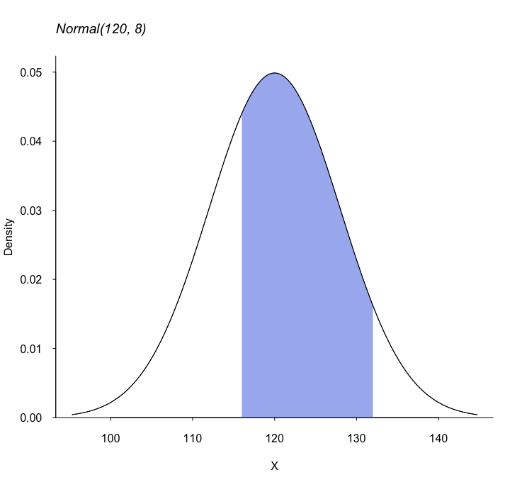

R Functions
Miscellaneous Functions
Download RFunctions2.R (GitHub)
-
groupSum computes and displays a summary of a numeric vector
v, optionally by grouped byg. Missing group IDs are treated as a separate group.data(iris) iris$Species[seq(1,150,length=20)] <- NA ## for demonstration purposes. groupSum(v=iris$Sepal.Length, g=iris$Species, select_stats=c('-SE')) N Min Q1 Med Q3 Max Mean SD setosa 43 4.3 4.80 5.0 5.20 5.8 4.98 0.353 versicolor 44 4.9 5.57 5.8 6.30 7.0 5.91 0.528 virginica 43 4.9 6.25 6.5 6.85 7.9 6.57 0.627 NA. 20 4.6 5.33 5.9 6.55 7.7 5.99 0.842 Combined 150 4.3 5.10 5.8 6.40 7.9 5.84 0.828 -
editRedCapData cleans the
data.framecreated by REDCap's .r file.- Delete all the numeric vectors when corresponding factor vectors are available.
- Delete
.factorfrom the variable names. - Change
.to_in the variable names (optional)
d <- editRedCapData(d, changeNames=TRUE) -
multTime multiplies a time value,
lap, bymultiplier.
This function answers questions such as: If I run 4:12/km for 42.195km, how long will it take?- The
lapargument can be specified in "HH:MM:SS" or "MM:SS" format (character string) or MM.SS format (numeric).
multTime(lap=4.12, multiplier=42.195) # multTime(lap='4:12', multiplier=42.195) # Same [1] "2:57:13" - The
-
addTime sums time values from the vector
times, which can be specified in "HH:MM:SS" or "MM:SS" format (character string) or MM.SS format (numeric).- The outputs of multTime and addTime can be used as inputs for this function. For example, to answer If I run 4:02/km for 5km, then 3:55/km for 7km, what is the total time?
addTime( c(multTime("4:02",5), multTime(3.55,7))) [1] "47:35" -
BinPower finds the critical value(s) for one-sample Binomial test.
Xcrin the output is the critical value (inclusive). H0 is rejected if X isXcr_highor higher, or X isXcr_lowor lower.
BinPower(n=50, p0=0.2, p1=0.4, alp=0.05, two.sided=FALSE) n p0 p1 alp two.sided Xcr_low Xcr_high typeI Power 1 50 0.2 0.4 0.05 FALSE NA 16 0.0308 0.904- For two-sided test, type I error rate,
alp, is divided by 2.BinPower(n=50, p0=0.2, p1=0.4, alp=0.05, two.sided=TRUE) n p0 p1 alp two.sided Xcr_low Xcr_high typeI Power 1 50 0.2 0.4 0.05 TRUE 4 17 0.0329 0.844 -
Beta distribution. These four functions are used for Beta distributions.
aandbare the two parameters.- BetaMS calculates the mean, variance, and standard deviation of a Beta(
a,b) distribution. - plotBetaDis plots the density function given
aandb. - BetaParameters solves for
aandbgiven the mean and variance of the distribution. I use this function when I need to simulate probabilities. - BetaCI computes a 100*
p% credible interval given Beta(a,b) as the prior distribution and "xsuccesses outn" as the data.
BetaMS(29, 11) a b mean var sd 1 29 11 0.725 0.00486 0.0697plotBetaDis(a=4, b=21, xlim=c(0, 0.5), yaxs='i')BetaParameters(m=0.4, v=0.02, PLOT=FALSE) [1] 4.4 6.6BetaCI(a=4.4, b=6.6, x=8, n=15, p=0.95) prior_a prior_b successes trials cred_level lower median upper 1 4.4 6.6 8 15 95% 0.292 0.476 0.665 - BetaMS calculates the mean, variance, and standard deviation of a Beta(
-
shadeDist draws a Normal curve or t-distribution curve and shade the specified region. I wrote this for teaching Biostats 1.
- Either one of
dfor "meanandsd" needs to be specified. - The shaded region is specified either by
LEFT,RIGHT, orBETWEEN. More than one of these can be used.
shadeDist(mean=120, sd=8, BETWEEN=c(116, 132), ylab='Density') title(main='Normal(120, 8)', font.main=3, adj=0) - Either one of
-
Survival Parameters. These functions convert survival parameters assuming a constant hazard, as in the exponential survival model.
ps2hr(prop, Time)converts proportion surviving (at Time =Time) to hazard rate.ms2hr(ms)converts median survival to hazard rate.hr2ms(hr)converts hazard rate to median survival.ps2ms(prop, Time)converts proportion surviving (at Time =Time) to median survival.ms2ps(ms, Time)converts median survival to proportion surviving.hr2ps(hr, Time)converts hazard rate to proportion surviving.
What is the one-year survival proportion if the median survival is 5 months?ms2ps(ms=5, Time=12) [1] 0.189 -
myKinddDay takes a regular R 'date' element and changes it to "yyyy/mm/dd" with no leading zeros (which is most common in Japan).
as.Date('1999-6-20') [1] "1999-06-20"myKindaDay(as.Date('1999-6-20')) [1] "1999/6/20"